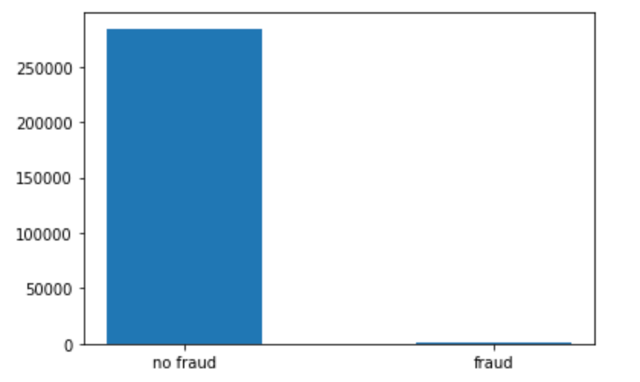
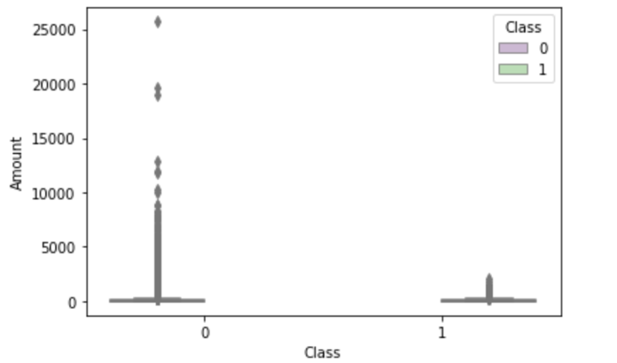
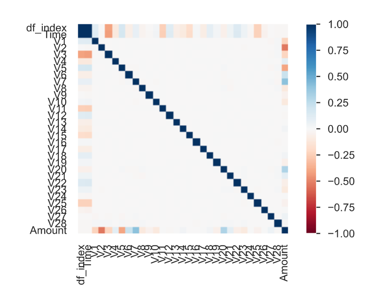
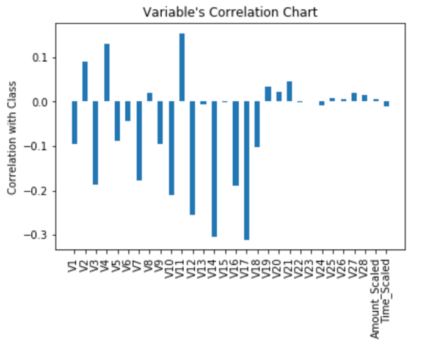
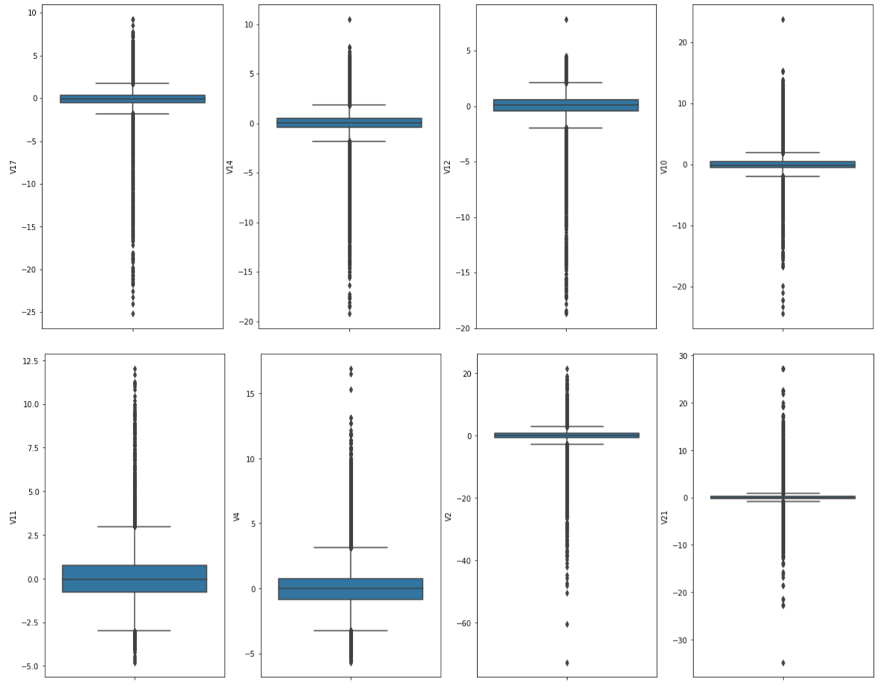
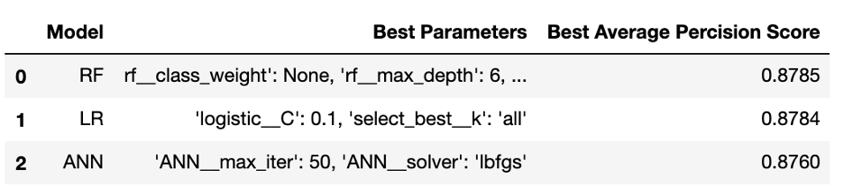
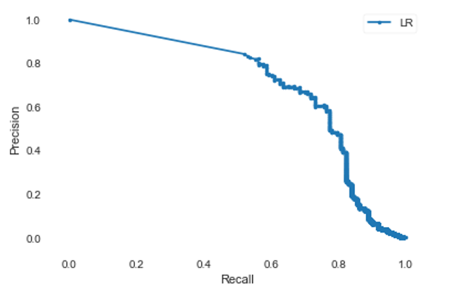
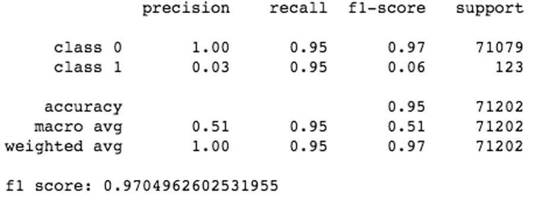

Credit Card Fraud Detection using Machine Learning

View code on github
Introduction
Credit Card fraud i.e. unauthorized access of someone’s credit card, is one of biggest problem that financial industries are facing since introduction of card-based payments. Credit Card fraud is one of the biggest sources of revenue loss for payment card industry. In 2018, $24.26 Billion was lost due to payment card fraud worldwide. The United States leads as the most credit fraud prone country with 38.6% of reported card fraud losses in 2018.
Financial institutions use traditional fraud detection system. Some issues with traditional fraud detection system:
- Requires domain expertise to build and maintain the system.
- High operating cost for maintenance.
- Greater Time to market to combat new fraud trends.
Data Used
- Dataset: Credit CardFraud Dataset
- Highly imbalanced Dataset. Out of 284807 total transactions only 492 transactions are fraudulent i.e. it represents only 0.17% of the entire dataset.
- To maintain the data confidentiality, most of the variables (V1 through V28) were PCA transformed.
Technology Used
- Python3
- Jupyter Notebook on Anaconda
Proposal
The aim of this project is to use machine learning techniques to combat fraud. Machine learning offers various classification models. This project will use Random Forest, Logistic Regression and Artificial Neural Network to build models. These models will be trained offline using the historical data. These trained models will be cross validated, and results will be compared to select the best model. It will be tested against an unseen test data. Once satisfied test result is obtained, it will be trained against the entire dataset and the prototype will be ready for use.
Process Overview
Historical credit card transaction data from Kaggle will be used for this project. Basic analysis will be done on this data to understand the basic structure. Then the dataset will be split into train and test dataset in 75%/25% ratio. After that Exploratory Data Analysis will be performed to understand the underlaying relationship between different variables. Then outliers will be removed. Pipeline will be created with data transformation logic. The model parameters will be tuned with the help of cross validation. Models’ performance will be evaluated and compared. Pipeline will be set up for best model and will be trained on the entire dataset.
Data
creditcard.csv is used from Kaggle. It contains two days credit card transactions from 2013 September from Europe. It contains 284,807 transactions. To maintain the data confidentiality, most of the variables were PCA transformed. Only ‘Amount’ and ‘Time’ variables are in their original form. Variables V1 through V28 contain only numeric values as a result of PCA transformation. ‘Class’ variable contains the outcome of the transactions – 1 signifies fraudulent and 0 – signifies non-fraudulent transactions.
It shows the dataset is highly imbalanced. Out of 284807 total transactions only 492 transactions are fraudulent i.e. it represents only 0.17% of the entire dataset. To understand how amount is distributed for each Class, the amount distribution is plotted for fraud and non-fraud class.

Exploratory Data Analysis and Data Cleaning
Exploratory Data Analysis is one of the most important steps in data science methodology. It reveals important relationship between variables that is not visible from outside. It also identifies the most important variables on the dataset that have most impact on the output class. Exploratory Data Analysis is done on training dataset to reveal important. pandas_profiling ProfileReport is used to get distribution of all variables as well as to get the univariate correlation between all variables.

Above Pearson and spearman plot shows the univariate linear and non-linear correlation between each variable with other variables. It also shows that none of the two variables are highly correlated. Pearson correlation is calculated between all independent variables with output ‘Class’ variable to identify important variables.

Boxplot to determine outliers
Amount, V14, V12, V10, V2 & V21 have outliers. And these outliers need to be removed prior to model training. Outliers need to be removed from both fraud and non-fraud Class separately. zscore is used to detect outliers. To remove outliers first the training dataset is split based on fraud and non-fraud class. zscore is calculated for each of these variables and all observations with zscore >= 3 is removed. Once the outliers are removed both classes are merged into one training dataset. As a result of this outlier removal process, it removed 27 fraudulent transactions and 18534 non-fraudulent transactions from training dataset. Because of PCA transformation, there is no null values in any of the variables. Also, V1 through V28 variables are scaled because these are PCA transformed.
Pipeline Setup
ColumnTransformer is used to transform the columns. RobustScaler is used for scaling the ‘Amount’ and ‘Time’ columns. All remaining columns are passthrough, no transformation will occur for those columns. Pipeline will have transformation built into it so that it can transform test dataset before feeding into model.
Model and Parameter Tuing
GridSearchCV is used to fine tune the parameter. It returns the best fit parameter depending upon average precision score.
Best Model Selection
Random Forest model is not calibrated. It returns a vote rather than a probability score. The calibration_curve shows that the random forest model requires further calibration.
Logistic Regression is selected based on the average precision score. This is less complex than artificial neural network model.
Model Evaluation
Logistic Regression model is tested against the test dataset and an average precision score of 0.66 is obtained.
Higher area under the average precision recall curve signifies, our selected model performed good on test dataset.
Conclusion
- All the Models performed Pretty Well.
- Average Precision Scores are Similar.
- Random Forest can be Improved with Calibration.
- Selected Logistic Regression model based on the Cross-Validation Score and simplicity of this model.
- Trained Logistic Regression model on Entire Dataset using best Parameter Pipeline.